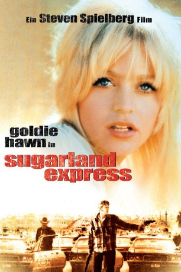

#6167 Sugarland Express
Alternativ: The Sugarland Express
 
 IMDB-Wertung: 6.8 / 10
IMDB-Wertung: 6.8 / 10  Metascore: 0
Metascore: 0 
Eine junge Frau und ihr aus dem Gefängnis geflohener Ehemann wollen ihr von den Behörden zur Adoption freigegebenes Kind zurückholen und verwickeln sich in eine Entführungsaktion. Mit einem Polizisten als Geisel und einer Kolonne von Verfolgern auf den Fersen fahren sie quer durch Texas, verursachen einen Sensationszirkus und enden im Kugelhagel der Polizei.
Jahr: 1974
Dauer: 109 Minuten
FSK: 12
Land: USA Studio: Universal PicturesTonspuren:
Untertitel: Deutsch,
Auflösung: 1080p (1920x816) Größe: 8949 MB
Genre: Drama, Krimi
Regisseur:  Steven Spielberg
Steven Spielberg
Drehbuch: Esra Inal
Soundtrack:
Darsteller:
 Goldie Hawn als Lou Jean
Goldie Hawn als Lou Jean Ben Johnson als Captain Tanner
Ben Johnson als Captain Tanner William Atherton als Clovis
William Atherton als Clovis Gregory Walcott als Mashburn
Gregory Walcott als Mashburn- Steve Kanaly als Officer Ernie Jessup
 Dean Smith als Russ Berry
Dean Smith als Russ Berry Bill Thurman als Hunter
Bill Thurman als Hunter- Merrill Connally als Mr. Vern Looby
- Gene Rader als Gas Jockey
 Dean Jones als Policeman at Football Game , uncredited
Dean Jones als Policeman at Football Game , uncredited- Michael Sacks als Slide
- Louise Latham als Mrs. Looby
- Harrison Zanuck als Baby Langston
- A.L. Camp als Mr. Alvin T. Nocker
- Jessie Lee Fulton als Mrs. Nocker
- Ted Grossman als Dietz
- Kenneth Hudgins als Standby #1
- Buster Daniels als Buster Daniels - Drunk
- James N. Harrell als Mark Fenno
- Frank Steggall als Logan Waters
- Roger Ernest als Hot Jock #1
- Guich Koock als Hot Jock #2
- Gordon Hurst als Hubie Nocker
- George Hagy als Mr. Sparrow
- Big John Hamilton als Big John
- Kenneth Crone als Deputy
- Peter Curry als Judge Peter Michael Curry
- Charles Conaway als Attorney
- Robert Golden als Dybala's Kid
- Rudy Robbins als Mechanic
- Charlie Dobbs als Local Cop
- Gene Lively als Reporter
- John L. Quinlan III als Bailiff
- William Scott als Station Man
- Ralph E. Horwedel als Dispatcher
- Edwin 'Frog' Isbell als Jelly Bowl
- James Robert Allen als D.P.S. Officer , uncredited
- Marianna Clore Blase als Waitress , uncredited
- David Bowen als Proprietor , uncredited
 Richard Bright als Marvin Dybala , uncredited
Richard Bright als Marvin Dybala , uncredited- B.M. Burch als Deputy , uncredited
- Charly als Wreckee , uncredited
- Harvey Christiansen als Old Reporter , uncredited
- Michael J. Croshaw als Reporter , uncredited
- Maria De Lange als Matron , uncredited
- Al Evans als Guard , uncredited
- James R. Gough als Deputy , uncredited
- Charles Gunn als D.P.S. Officer , uncredited
- Sam Kindrick als Reporter , uncredited
- Myles R. Kuykendall als D.P.S. Officer , uncredited
Datei: X:\1974\Sugarland Express (1974, FSK12, 1920x816).mkv seit 09.05.2017
Festplatte: HD 1971-1979
 Es gibt insgesamt 33 Filme in der Gruppe '1974'
Es gibt insgesamt 33 Filme in der Gruppe '1974'